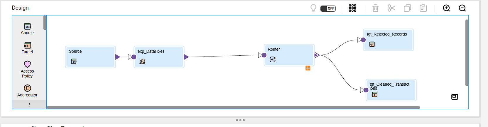
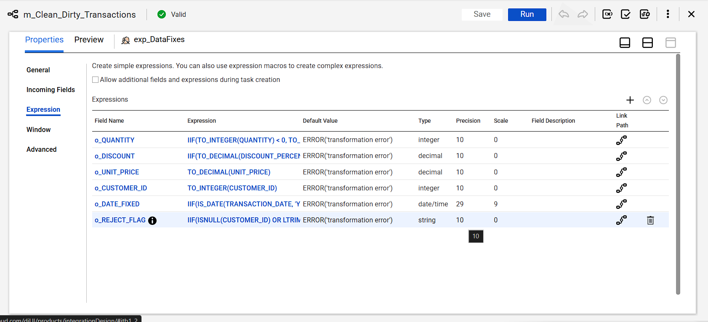
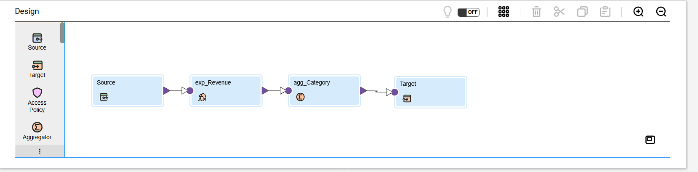
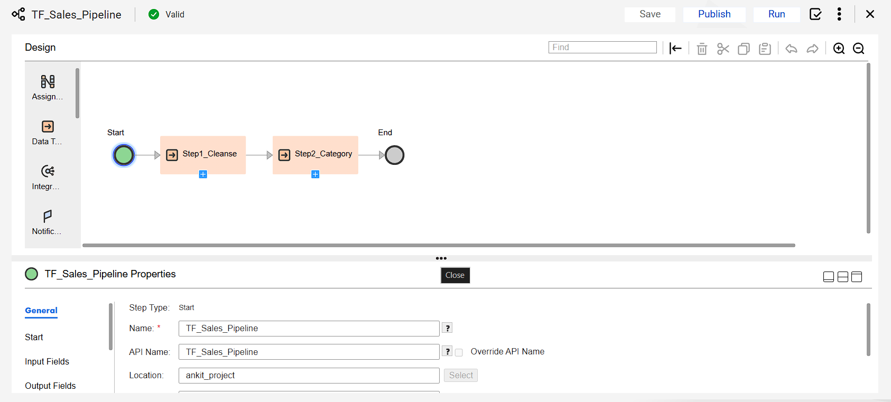
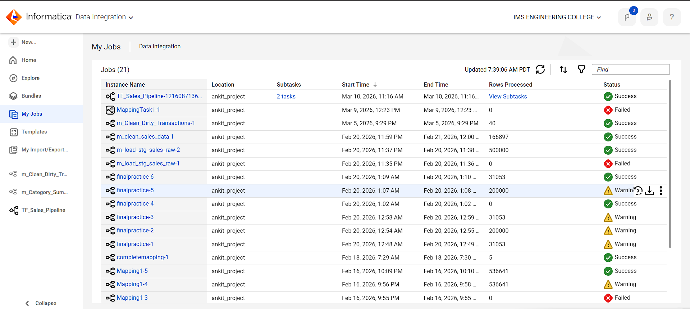

A complete cloud-based ETL pipeline that cleanses dirty sales data, aggregates revenue by product category, and orchestrates the workflow using a Taskflow — all built on Informatica Intelligent Cloud Services (CDI).
Reads 40 rows of intentionally dirty sales data. The Expression transformation (exp_DataFixes) fixes negative quantities, invalid discounts, and null values. The Router splits records into PASS (cleaned) and FAIL (rejected) groups, writing to two separate target CSV files.

Six output ports handle all data quality fixes: o_QUANTITY uses ABS(TO_INTEGER()) to fix negative values, o_DISCOUNT corrects invalid percentages, o_DATE_FIXED validates date formats using IS_DATE(), and o_REJECT_FLAG determines PASS/FAIL using nested IIF conditions checking nulls, ranges, and formats.

Reads 50 clean sales records. The Expression (exp_Revenue) calculates revenue per row as QUANTITY × UNIT_PRICE × (1 − DISCOUNT/100). The Aggregator (agg_Category) groups by PRODUCT_ID and computes TOTAL_QUANTITY, TOTAL_REVENUE, and AVG_DISCOUNT. Output written to TGT_CATEGORY_SUMMARY.csv.

Orchestrates both mappings automatically. Step1_Cleanse runs first. Only on SUCCESS does Step2_Category execute — ensuring analytical reports are never built on uncleaned data. If Step 1 fails, the pipeline stops immediately. Both steps are connected as Mapping Tasks inside the Taskflow canvas.

The TF_Sales_Pipeline ran successfully on Mar 10, 2026 with 2 subtasks — both mapping tasks completed without errors. Previous runs visible include m_Clean_Dirty_Transactions (40 rows processed) and m_load_stg_sales_raw (500,000 rows — demonstrating large-scale capability). Full job history shows the project's development progression.
